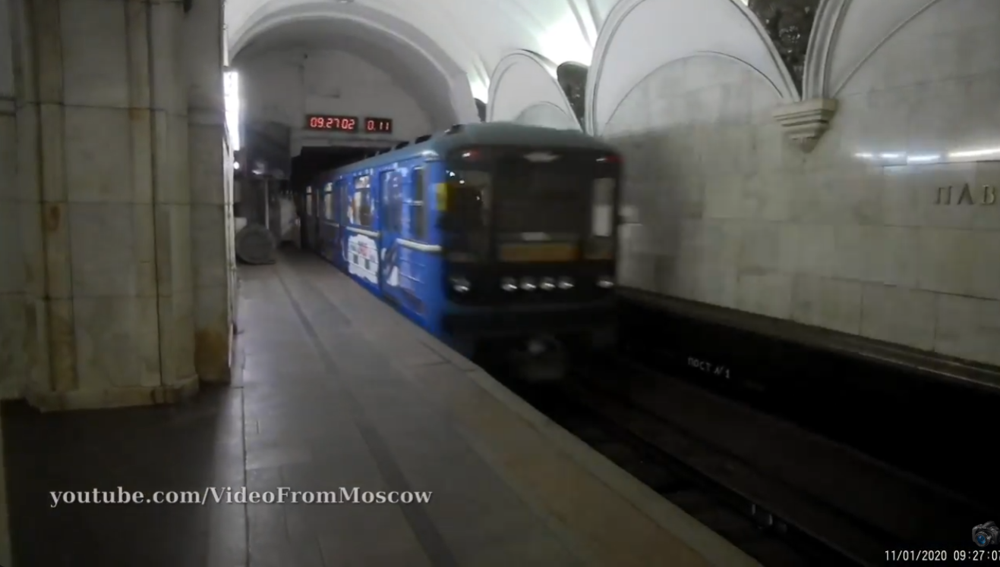
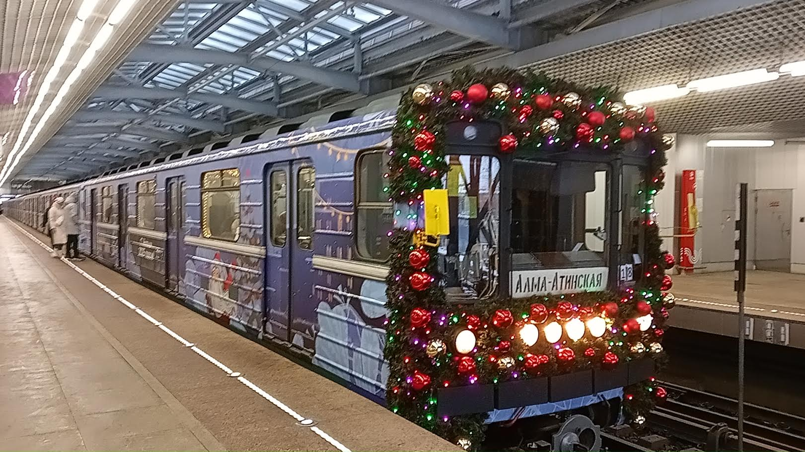
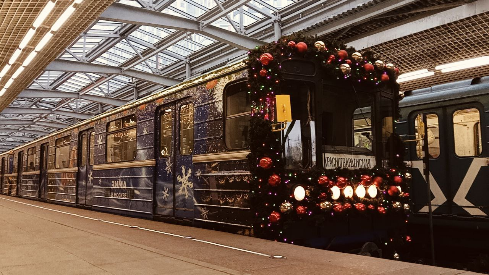

🎄 Новогодний 81-717 🎅
Впервые новогодний номер (81-717) появился в 2020 году. Он вышел на линии: Замоскворецкую (ЗЛ), Сокольническую (СокЛ) и Калужско-Рижскую (КРЛ).
После ухода новогоднего Еж3, ретро-составом должен был стать другой поезд — следующим был 81-717.
История появления
Впервые новогодний номер появился в 2020 году. Он вышел на линии:
🚇 ЗЛ
Замоскворецкая линия
🚇 СокЛ
Сокольническая линия
🚇 КРЛ
Калужско-Рижская линия
Варианты расцветок
За время работы состав имел несколько вариантов новогоднего оформления:
Первое новогоднее оформление
Состав впервые вышел на линии ЗЛ, СокЛ и КРЛ.
Обновление оформления
Новый вариант новогоднего украшения.
Ретро-состав
В 2024 году состав нарядили к Новому году, после чего состав вышел на линию. Через пару дней маску украсили дополнительно.
Продолжение традиции
Новое оформление состава.
Текущее оформление
Состав продолжает работу в новогоднем оформлении.
Ретро-состав
После ухода новогоднего Еж3, ретро-составом должен был стать другой поезд — следующим был 81-717.
В 2024 году состав нарядили к Новому году, после чего состав вышел на линию. Через пару дней маску украсили дополнительно.
В обычное время состав работал перегоночным, к Новому году — как ретро-состав.
| Параметр | Значение |
|---|---|
| Модель | 81-717/714 |
| Первое появление | 2020 год |
| Линии работы | ЗЛ, СокЛ, КРЛ |
| Роль | Ретро-состав (с 2024), перегоночный (в обычное время) |
Фотогалерея

Первое новогоднее оформление.

Продолжение традиции.

Текущее оформление.
Нажмите на фото для увеличения
«Новогодний 81-717 — это продолжение традиции праздничных поездов Московского метрополитена. Он пришёл на смену легендарному Еж3 и продолжает радовать пассажиров».